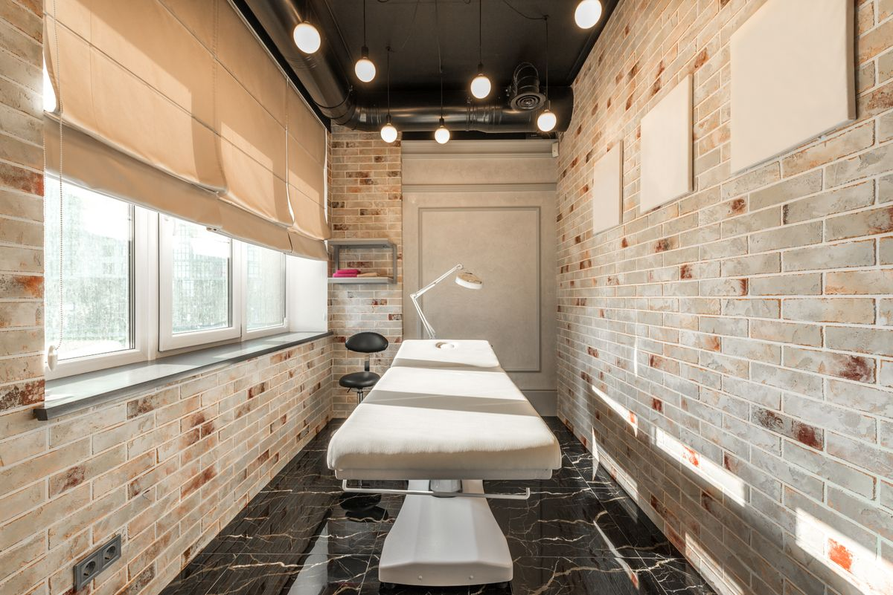
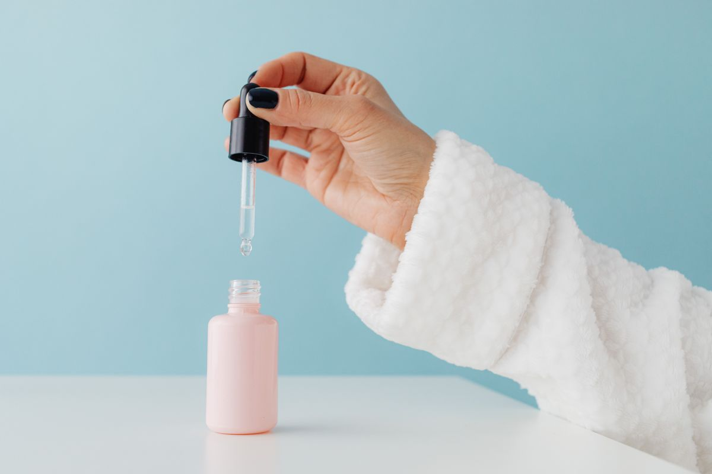
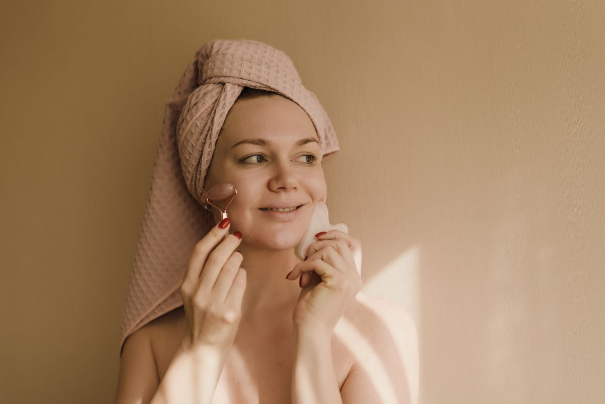
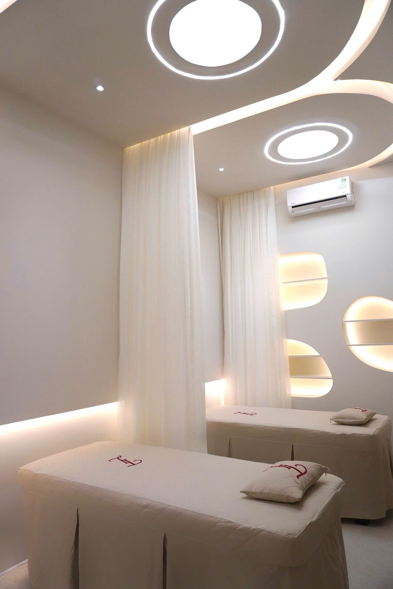
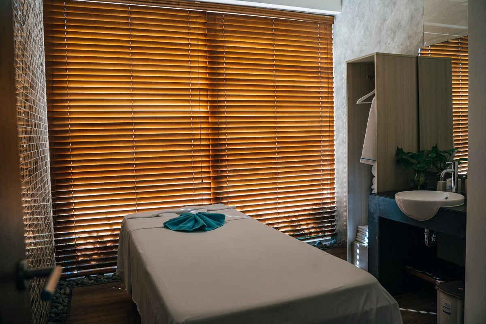

Galerie
L'institut, en images






Un diagnostic personnalisé, des rituels sur-mesure et des mains expertes — pensés pour révéler votre peau, pas pour la standardiser.
Répondez pour découvrir le rituel le plus adapté à votre peau aujourd'hui. Un vrai diagnostic en cabine reste toujours plus précis.
Répondez aux trois questions pour révéler votre rituel personnalisé.
Cliquez sur un rituel pour découvrir son déroulé complet.
« Une belle peau ne se maquille pas, elle se soigne. »
Fondé par Camille Rey, esthéticienne diplômée, L'Institut Éclat est né d'une conviction : chaque geste compte autant que chaque produit. Toute l'équipe est formée en continu aux techniques de massage facial et aux protocoles les plus récents.
Nous sélectionnons des soins à la formulation courte, sans parfum de synthèse, adaptés à chaque type de peau plutôt qu'à une routine universelle.





Le diagnostic peau en ligne était bluffant de justesse — le rituel recommandé était exactement ce dont j'avais besoin.
Sur rendez-vous, du mardi au samedi.
14 rue de l'Éclat, Luxembourg
+352 00 00 00 00
contact@institut-eclat.lu
Mardi — Vendredi : 9h30 – 19h
Samedi : 9h30 – 17h